Kusunoki Mono
SF Mono を半角1:全角2に整え、LINE Seed JP を重ねた日本語プログラミングフォント。真のイタリック、JetBrains Mono リガチャ、Nerd Fonts 内蔵。
# Homebrew 6.0+ 初回のみ: brew trust peinan/kusunoki-mono
kusunoki-mono specimen
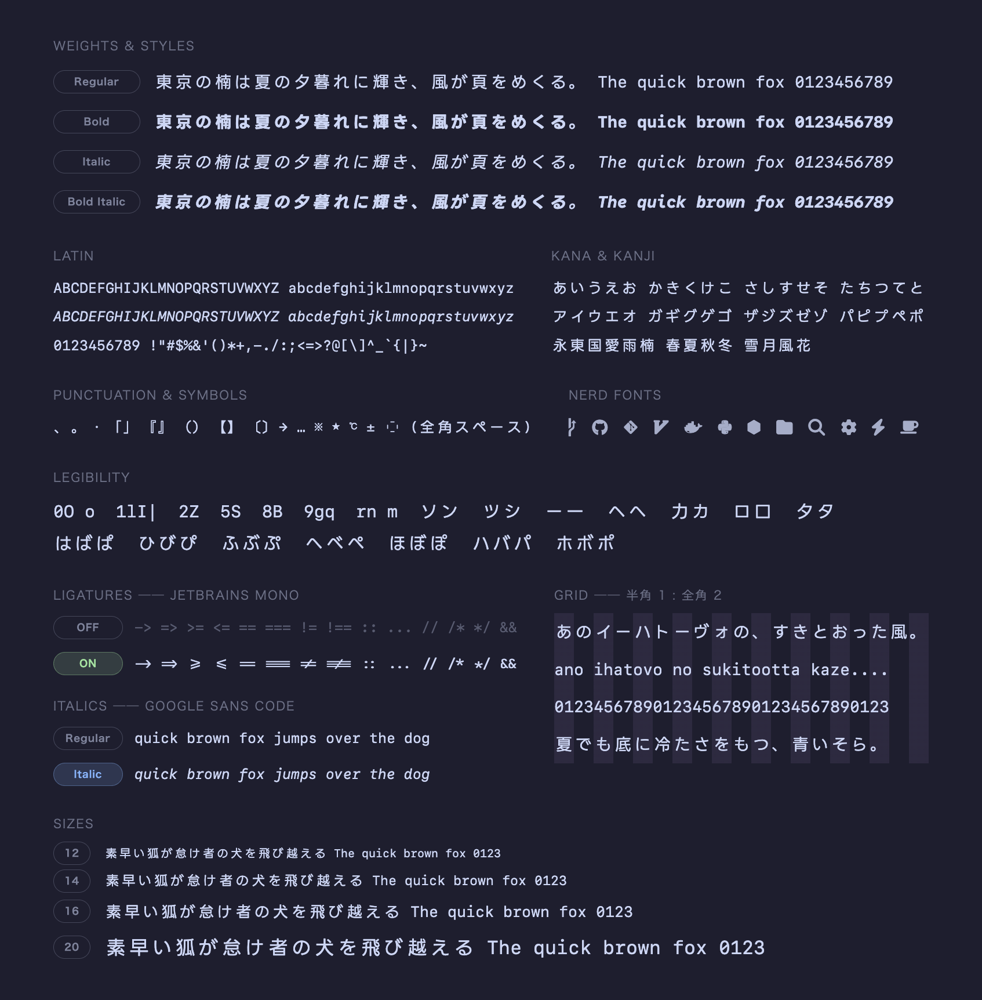
kusunoki-mono sources
5つの素材と1つのフォールバック。それぞれの得意なところだけを合成しています。
kusunoki-mono dakuten --compare
小サイズで潰れがちな濁点・半濁点を MigMix の流儀で拡大し、画に重なる部分は skip ink で彫り込み。濁点かな52字を1文字ずつ調整。ば と ぱ が 11px でも見分けられます。
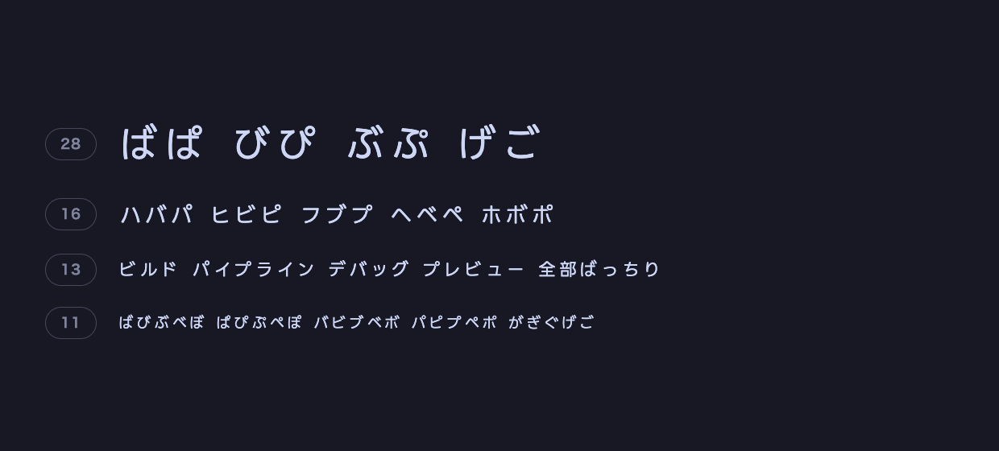
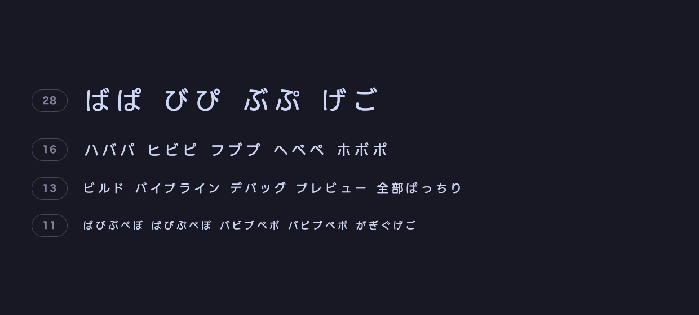
kusunoki-mono italic --vs sf-mono
SF Mono の斜体は直立字形を傾けたオブリーク。Google Sans Code の真のイタリックから、馴染む14文字だけを一字ずつ確かめて移植しました。
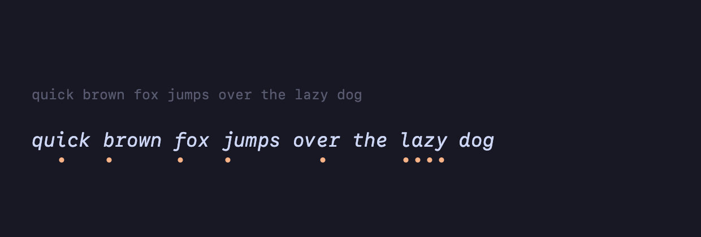
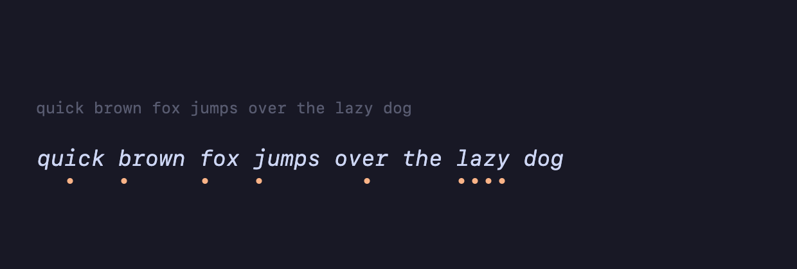
kusunoki-mono ligatures
JetBrains Mono のリガチャを、セル幅と SF Mono の背丈に合わせて移植。calt 合成なのでエディタ側でオフにもできます。
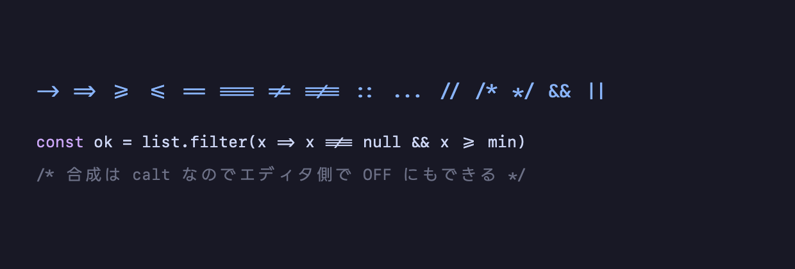
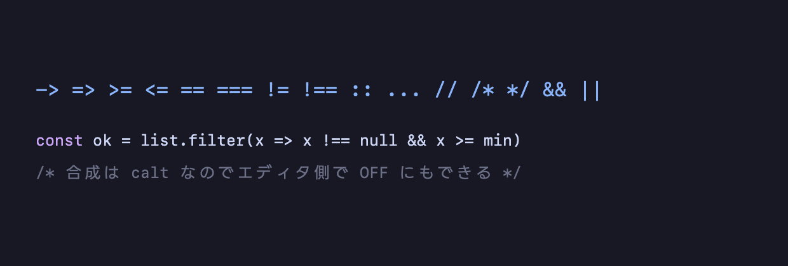
kusunoki-mono grid
全角はつねに半角ちょうど2文字ぶん。日本語コメントも罫線の表も、ターミナルでもエディタでも崩れません。
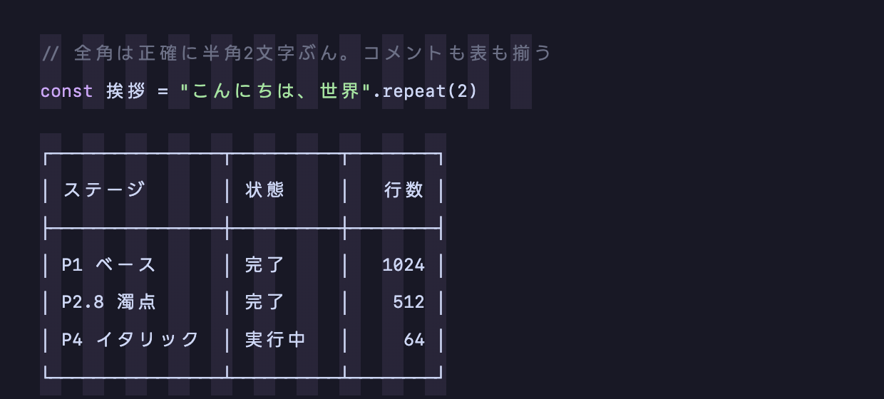
kusunoki-mono nerd-fonts
Nerd Fonts のアイコンを標準装備。既定のパッチでは大小が揃わないため、サイズは手で細かく調整しています。
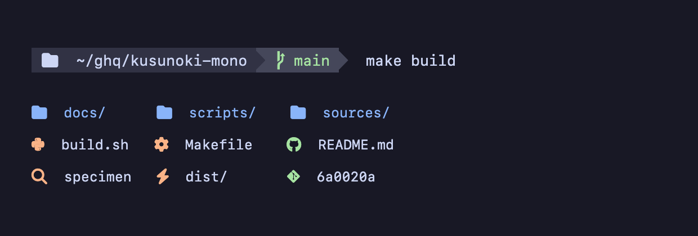
kusunoki-mono jp-sizes
和文は小サイズの視認性に優れた LINE Seed JP。エディタで現実的な 11–14px でもくっきり読めます。
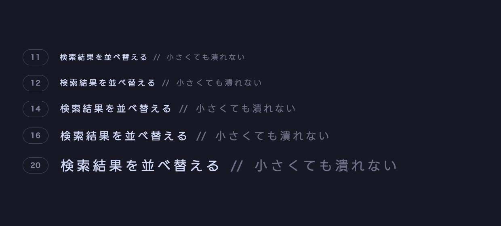
kusunoki-mono craft --tuner
かな、1文字ずつ
一括処理では決まらないので、専用ツールを作って濁点かな52字を目視で調整。破線が元のマーク位置。倍率・回転・彫り幅をかなごとに上書きできます。
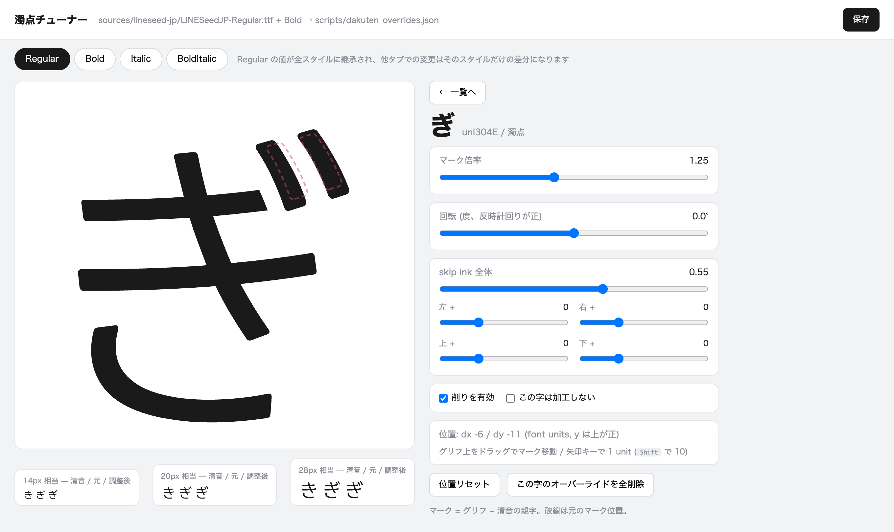
kusunoki-mono screenshots --vscode
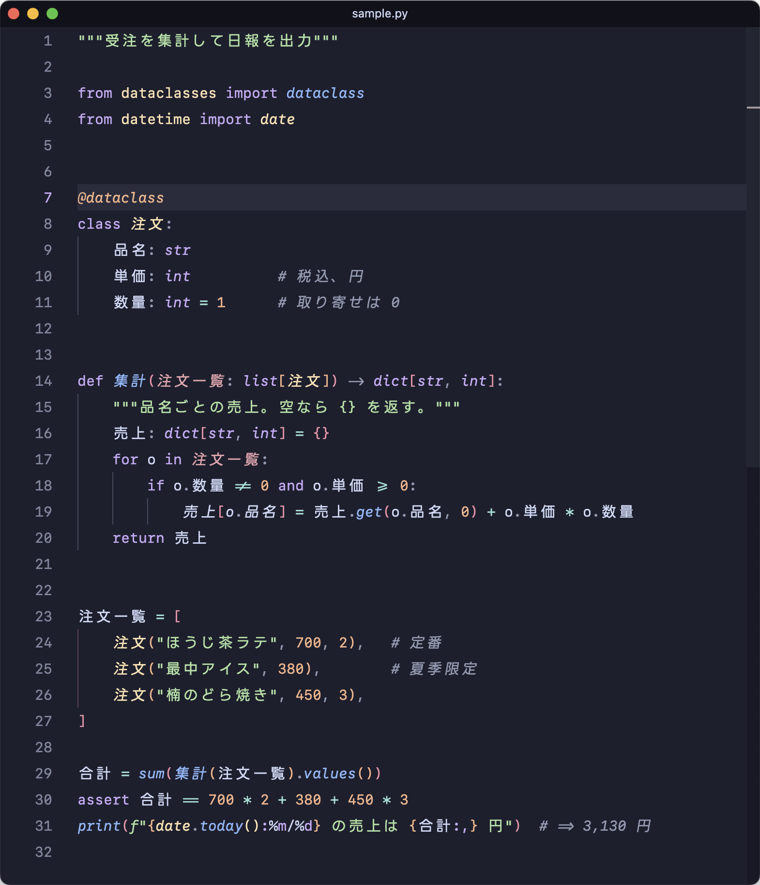
kusunoki-mono screenshots --keifu
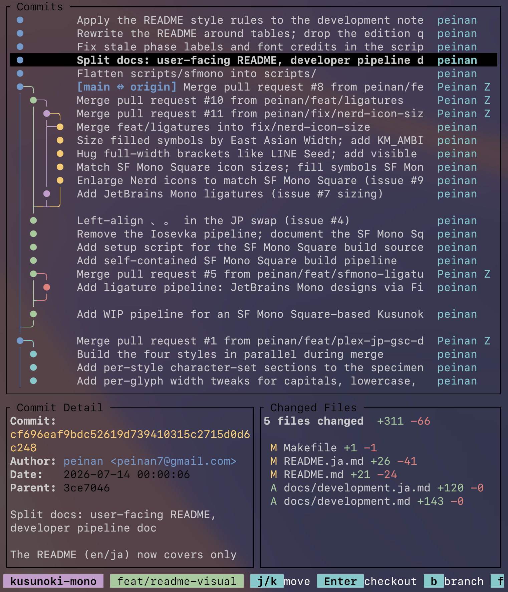
kusunoki-mono screenshots --herdr
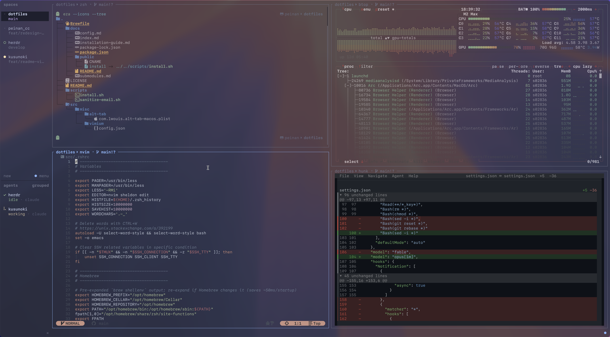